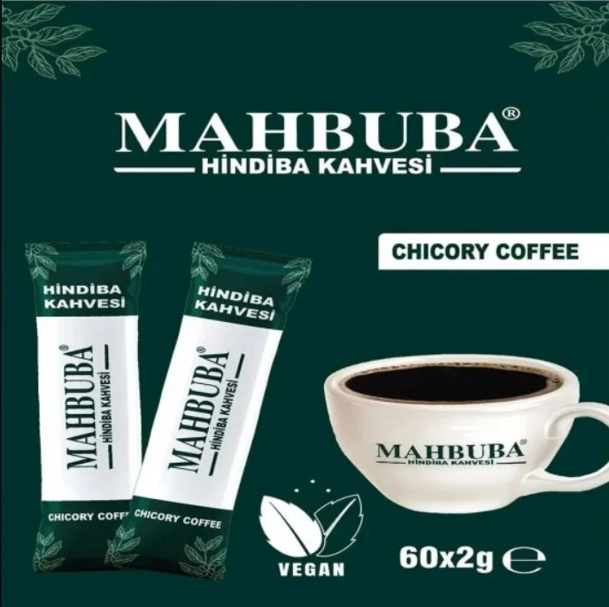

طبيب سعودي يبوح بسر جديد: كوب القهوة هذا قد يكون نهاية رحلتك مع السمنة
تشكل السمنة قضية صحية ملحة تؤرق العديد من الناس حول العالم، وقد يكون الحل في بساطة روتيننا اليومي، كما يكشف الدكتور علي الحربي، المتخصص في الصحة والتغذية بالمملكة العربية السعودية. في حوارنا معه، يلقي الضوء على منتج جديد ويُعد ثورة في عالم الحميات الغذائية. والذي يدعى Chicory Coffee
مرحباً بك دكتور الحربي، يقال إن Chicory Coffee أكثر من مجرد مشروب، كيف تساهم في مكافحة السمنة؟
يقول دكتور علي الحربي: شكراً لكم. Chicory Coffee ليست مجرد بديل للقهوة العادية، بل هي أداة فعالة لتحسين الأيض وتنشيط عمليات حرق الدهون في الجسم. يتميز هذا المشروب بأنه يُحاكي القهوة العادية في طعمها الغني وتأثيرها المنعش، مع فوائد إضافية مُثبتة علمياً.
هل هناك أسباب معينة تجعلك توصي به خصيصاً دكتور؟
يقول دكتور علي الحربي: أولاً، مكونات Chicory Coffee مُختارة بعناية لتعزز من الشعور بالشبع، ما يُساعد على تقليل الرغبة الشديدة في تناول الطعام. ثانياً، تحتوي على مركبات تُساعد في تسريع حرق الدهون، بالإضافة إلى ذلك، فهي تعمل على زيادة الطاقة والحيوية. والأهم من ذلك كله، فإن القهوة خالية من أي مواد ضارة، وهذا يُعتبر عنصراً أساسياً في برامجي الغذائية.
ما الذي يميز Chicory Coffee عن غيرها من المشروبات المُستخدمة في أنظمة الرجيم؟
فعالية Chicory Coffee يتحدث عنها دكتور علي الحربي: تكمن في قدرتها على التأثير المباشر على العمليات الأيضية في الجسم. هي لا تقتصر فقط على حرق الدهون، بل تُحسن من معدل الأيض بشكل عام، وهذا يعني نتائج مستدامة وصحية. يتناول الأشخاص مشروبهم المفضل مع الحفاظ على وزنهم, يؤكد متخصصو تغذية محليون وأجانب على الجودة العالية للمنتج، كما ينوهون إلى خلوه التام من الأضرار.
لماذا اخترت هذا المنتج Chicory Coffee بشكل خاص دكتور علي؟
احتل مشروب Chicory Coffee لشهور عديدة مرتبة متقدمة كأحد أكثر الوسائل فعالية في إنقاص الوزن. يشبه المشروب في مظهره ومذاقه القهوة المعتادة، كوب واحد من الإسبريسو أو الأمريكانو يفعم الجسد بالطاقة ويزيد من القدرة على العمل، فإن حصة واحدة من Chicory Coffee تنشط عمليات حرق الدهون بالإضافة إلى زيادة حيوية الجسد. يؤكد متخصصو تغذية محليون وأجانب على الجودة العالية للمنتج، كما ينوهون إلى خلوه التام من الأضرار. عند تناول Chicory Coffee يمكنك الاستمرار في تناول الأطعمة التي تحتوي على الكربوهيدرات مع مُراعاة ألا تتناول الكثير منه. تعزز التركيبة الفعالة التي يحتوي المنتج عليها عملية حرق الدهون بمعدل ضعفين أو ثلاثة دون إلحاق أي أضرار بجسمك.
يحتوي المنتج على عشبة الهندباء البرية, فما فوائدها؟

-1 تقليل سكر الدم بالتالي تساعد على امتصاص
الكربوهيدرات مما يساعد على نزول الوزن
-2 يساهم الشيكوريا في التحكم في الشهية، مما
قد يساعد في فقدان الوزن مع مرور الوقت
-3 تساهم بشكل إيجابي في تحسين الصحة الهضمية
عن طريق التعامل مع قضايا مثل الإمساك وتعزيز وظيفة الأمعاء.
-4 لا تتطلب إجراء تعديلات جذرية في نظامك
الغذائي؛ فهي تساعدك على خفض استهلاك الكربوهيدرات بسهولة. كما أنها تلغي الحاجة إلى تمارين
بدنية مكثفة لرؤية النتائج.
-5 تحتوي على مكونات طبيعية بنسبة 100% حيث
انها عشبة طبيعية بدون اي مواد صناعية
الشهادات والمصداقية
تأكدت فاعلية قهوةChicory Coffee عن طريق نتيجة اختبارات المواصفات والمقاييس التي أُجريت في الولايات المتحدة وإنجلترا
بالإضافة ان هذا المنتج مرخص من قبل هيئةالغذاء والدواء و امن 100% أطلبه الان
التعليقات:
Aya M.
جربت قهوة الشيكوريا وكانت تجربة ممتازة، بديل صحي ولذيذ للقهوة اليومية. لاحظت تحسن في مستويات طاقتي خلال اليوم.
Yara S.
لم أكن مقتنعة في البداية، لكن بعد تجربتها لمدة شهر، شعرت بفرق في وزني وصحتي العامة. مذاقها يشبه كثيرا القهوة العادية.
Fares M.
الحقيقة، قهوة الشيكوريا فاجأتني بجودتها. مريحة للمعدة وساعدني على التركيز في عملي.
Kholod A.
والله من يوم ما بديت أستخدم القهوة هذي وأنا حسيت بفرق كبير، خف وزني والكل لاحظ.
Maya K.
عن تجربة شخصية، كنت أعاني من الوزن الزائد وخاصة بعد الولادة. جربت القهوة هذي بناءً على نصيحة خالتي من الكويت وما شاء الله تبارك الله خف وزني اكثر من 10 كيلو جرامات
.احمد م
صار لي فترة طويلة أحاول أعمل رجيم وأتبع نظام صحي، بس ما كنت أشوف نتيجة ملموسة. لما بدأت استخدم القهوة هذي، حسيت بفرق كبير وكأني لقيت السر اللي كنت أدور عليه.
سارة هاني
حبيت أشارك تجربتي معاكم، بصراحة القهوة هذي ساعدتني كثير بعد معاناة من الرجيمات القاسية.
Omar
كنت أشوف زوجتي دائماً مهمومة بسبب زيادة الوزن بعد الولادة، وهذا الشيء كان يؤثر على معنوياتها ونشاطها اليومي. قررت أفاجئها وأبحث عن حل يساعدها بطريقة صحية وما يضرها، لين وجدت هذه القهوة وقريت عن فوائدها الكثيرة. ما ترددت وطلبتها لها، والصراحة كنت شوي متخوف، بس قلت ما راح نخسر شيء لو جربنا
Maryem B.
صار لي شهور أشربها كل صباح، وكل اللي أعرفهم لاحظوا الفرق. شكرًا لكم!
اميرة
بعد الولادة وزني زاد وحاولت بكل الطرق أنزله، لين جربت هذي القهوة العجيبة. خلال شهرين وزني رجع مثل قبل وأحسن. ما أقدر أشكرهم كفاية
.رنا خ
أنا شخصياً لا أفضل القهوة كثيراً، لكن قهوة الشيكوريا كانت استثناء بالنسبة لي، خفيفة ولذيذة
Ola
أول مرة سمعت عنها كان من بنت عمي اللي عايشة في جدة. قالت لي جربيها وما راح تندمين. بصراحة، كنت مترددة بس الآن أشكرها كل مرة أشوفها
Noura
أنا ما كنت أتخيل أن القهوة بتساعدني في تخفيف الوزن، بس هالقهوة غيرت كل شي. الحمدلله على هالنتيجة
Rahma
شكرا على المعلومة، طلبت المنتج وتواصلوا معي.
Ward Osama
منتج روووعة ما صدقت حالي لما شفت الفرق في اسبوع بس و بدون اي تغيير في نظامي الغذائي لازم تجربوه